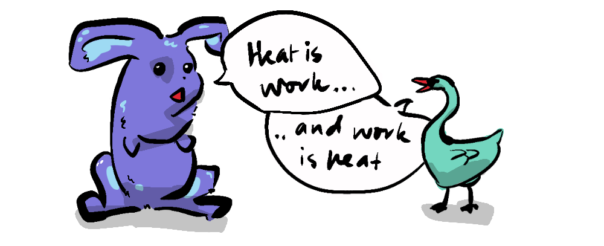

~ a universal paradox ~
Conway's Game of Life showed that complexity can emerge from simple rules. But this game takes place on a computer, in a world of discrete bits and bytes, not the messy universe in which we live.
Well, our universe too contains a principle of emergence that we have to thank for our very existence. Though, at first glance, this shouldn't be possible, because of one universal law...
The Second Law of Thermodynamics or "The Law of Entropy" can be understood in its simplest formulation by a 1950s musical comedy duo:
"Heat won't pass from a cooler to a hotter. You can try it if you like but you far better notter." - Flanders and Swann
Originally conceived by physicist Ludwig Boltzman, the second law holds that, in an isolated system, entropy will increase until equilibrium is reached. This means that nothing can be created that doesn't entail equal or greater collateral destruction—often in the form of heat, a form of energy with less capacity for work. This is consequently why perpetual motion machines are impossible.

Examples abound; pour milk into coffee and watch the black base swirl and combine with the milk to create an opaque uniform brown—mirroring the equalization of the temperature, shuffle a Rubik's cube just a few times and see how disorder naturally arises, or fart in an elevator and experience the inevitable shared torment as gas expands to fill a space.
"What makes life so strange is its seeming exception to this rule." - Erwin Schrodinger
Schrodinger, in "What is Life", defines life as that which frees itself from Entropy. Living things successfully create discrete boundaries between bodies and the world, different organs and even separate thoughts.
Counter-intuitively we see the emergence of order all around us. Not only do we see animals grow—an emergent phenomenon of cells and DNA, but we see solar systems held in a delicate dance, gravitational bodies which sort atoms of different densities into strata, we see complex colonies emerge from the simple actions of individual ants. Steven Pinker suggests that we find beauty in ordered configurations such as spheres, spirals, starbursts, ripples, crystals or fractals due to...
"... a receptiveness to the counter-entropic patterns that can spring from nature." - Steven Pinker

We are at any time a stone's throw away from a dozen contradictions to the second law, and yet there is no contradiction. A system where entropy is increasing can contain local areas where it is decreasing.
Entropy increases by particles mixing with neighbouring atoms, or having their energetic jiggling transfer from one to the next. This usually results in a homogenising of the substance or activity. But what happens when a particle can only interact with its neighbours in a very specific way, one not conducive to mixing?
Such particles are like the glider in Conway's game, which is made up of pixels that are configured in such a way as to consistently clone themselves in a new position. They move! The glider travels in a straight line until it eventually collides with another occupied cell, setting off a cascade of activity and animating new life.

Here on earth, we benefit from living in a non-zero-sum system for one reason: The Sun. As the sun slowly dissipates via entropy, it leaks an energy stream in the form of photons that travel in a straight line across time and space until they come in contact with... a leaf.
Like Conway's glider, the photon's contact with the leaf sets off a cascade of activity; photosynthesis creates oxygen, which fuels animals, which evolve pre-frontal cortexes, which invent technology in an ever-evolving chain that ultimately derives its energy from 173,000 terawatts of sunlight pelting the earth every second.
The Sun is what's called a dissipative structure, a sort of engine that accelerates the increase of entropy by releasing energy.
So, does the earth just absorb and harness this energy?
It turns out no. On balance the earth releases as much energy as it absorbs*. This is because, as earth takes in energy from the sun, that energy combines with elements on earth to create new substances and forces which are released from earth (mainly in the form of heat). Not only do plants do this when they perform photosynthesis, but humans do it when they burn fossil fuels or split highly ordered Uranium atoms to produce Nuclear power, or for that matter when we perform our own version of photosythesis with solar panels. It turns out life, and humans in particular, are themselves dissipative structures.

Because the process of energy formation is not 100% efficient, the energy released has less potential for work—further increasing entropy. So, while life might sometimes find a way, it turns out
Entropy always finds a way.
The sun, the earth, and everything in it is contributing to the overall increase in entropy, so we don't contradict the second law, phew. But, we are also contributing to the death of the Universe, but only a little, so it's okay.
The Universe seems to allow for local decreases in entropy, as long as they serve to accelerate its ultimate goal of increasing entropy. Like water spiralling down a plug hole, it's allowed to contradict gravity by moving sideways (rather than directly downward) because doing so enables the whole body of water to reach its gravitational destination†.
And it is gravity we'll proceed to in the next part, to show how emergence... emerged.